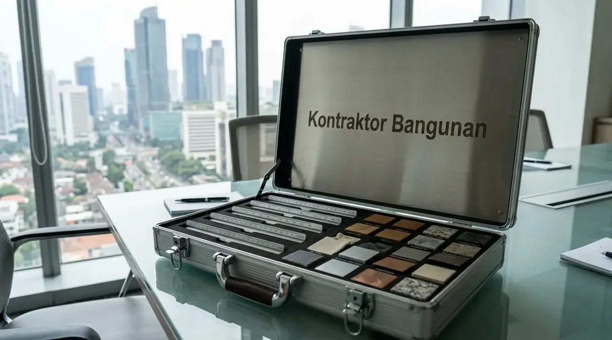

Bagaimana Urutan Sistematis Tahapan Proses Bangun Rumah dari Nol?
Urutan pengerjaan konstruksi diawali dari tahap perencanaan konseptual hingga tahap penyelesaian dekoratif untuk menjamin keandalan struktur dan efisiensi alokasi biaya. Memahami urutan ini menghindarkan Anda dari pembongkaran ulang yang memakan biaya besar.
Berikut sembilan fase utama dalam tahapan proses bangun rumah dari nol yang wajib dilaksanakan secara berurutan:
- Perencanaan Anggaran dan Penyusunan RAB: Menentukan batas total biaya pembangunan serta menghitung rincian kebutuhan material, biaya peralatan, dan upah kerja melalui lembar Bill of Quantities (BoQ) yang transparan.
- Perancangan Desain Arsitektur dan Struktur: Membuat denah 2D, visualisasi 3D fasad eksterior dan interior, gambar kerja Detail Engineering Design (DED), serta perhitungan beban struktur tahan gempa oleh insinyur sipil.
- Pengurusan Perizinan Persetujuan Bangunan Gedung (PBG): Mengajukan dokumen perizinan resmi pengganti IMB ke dinas teknis pemerintah daerah setempat melalui portal SIMBG resmi untuk menjamin legalitas hunian.
- Pembersihan Lahan dan Pengukuran (Bowplank): Meratakan permukaan tanah, membersihkan semak dan akar pohon, serta memasangkan patok kayu bowplank untuk menentukan garis as dinding dan elevasi nol bangunan secara presisi.
- Pekerjaan Pondasi dan Struktur Bawah: Menggali tanah sesuai kedalaman rencana, memasang pondasi batu kali/cakar ayam beton bertulang, urugan pasir, serta pengecoran balok sloof pengikat kolom.
- Pekerjaan Kerangka Struktur Utama: Merakit pembesian besi beton SNI, memasang bekisting, serta mengecor kolom praktis/utama, balok gantung, ring balok, dan pelat dak beton lantai dua (jika rumah bertingkat).
- Pekerjaan Dinding dan Penutup Atap: Memasang dinding bata ringan (hebel) atau bata merah dengan adukan mortar perekat, plesteran, acian, dilanjutkan pemasangan kuda-kuda rangka atap baja ringan dan penutup genteng.
- Pemasangan Instalasi MEP (Mekanikal, Elektrikal, Plumbing): Menanam jalur pipa air bersih, pipa pembuangan air kotor menuju septictank, pipa talang hujan, serta penarikan kabel instalasi listrik, stopkontak, dan sakelar.
- Tahap Finishing dan Serah Terima Kunci: Pemasangan keramik lantai/granit tile, pemasangan kusen pintu dan jendela, pengecatan dinding interior dan eksterior, instalasi sanitari (kloset, wastafel), serta inspeksi checklist akhir bersama.
| Fase Pengerjaan | Estimasi Durasi | Fokus Pekerjaan Utama |
|---|---|---|
| 1. Perencanaan & RAB | 1 – 2 Minggu | Penyusunan BoQ, estimasi anggaran, penentuan spesifikasi material. |
| 2. Desain & Gambar DED | 2 – 4 Minggu | Denah tata ruang, gambar 3D, pemodelan struktur sipil. |
| 3. Perizinan PBG | 2 – 4 Minggu | Pengajuan berkas SIMBG hingga penerbitan izin resmi dinas. |
| 4. Persiapan & Bowplank | 3 – 7 Hari | Pembersihan tanah, perataan elevasi, patok ukur as bangunan. |
| 5. Pondasi & Sloof | 2 – 4 Minggu | Galian tanah, cakar ayam, pondasi batu kali, sloof beton. |
| 6. Struktur Utama | 4 – 8 Minggu | Pembesian kolom, balok, cor dak beton lantai atas. |
| 7. Dinding & Atap | 3 – 6 Minggu | Pasang bata ringan, plester-aci, rangka baja ringan, genteng. |
| 8. Instalasi MEP | 2 – 3 Minggu | Pipa air bersih-kotor, grounding & instalasi listrik penerangan. |
| 9. Finishing & Serah Terima | 4 – 6 Minggu | Granit, cat dinding, plafon gypsum, sanitari, checklist STP. |
Mengapa Dokumen Perencanaan dan Legalitas Wajib Diselesaikan di Awal?
Penyelesaian dokumen legalitas PBG serta gambar kerja di awal berfungsi mencegah penghentian proyek secara paksa oleh dinas terkait dan menghindari kesalahan potong material di lapangan.
Manfaat utama penyelesaian dokumen sebelum penggalian tanah:
- Kepastian Hukum Properti: Memastikan posisi tapak bangunan mematuhi Garis Sempadan Bangunan (GSB), Koefisien Dasar Bangunan (KDB), serta tidak melanggar batas hak lahan tetangga.
- Akurasi Pembelian Bahan: Menghindari pembelian material berlebih atau salah ukuran akibat ketiadaan acuan gambar kerja yang rinci, sehingga modal Anda terlindungi.
- Kemudahan Pengawasan Kerja: Menjadi tolok ukur obyektif bagi mandor dan supervisor untuk memeriksa ketepatan sudut siku dan mutu hasil pasangan tukang di lokasi proyek.

Perencanaan struktur konstruksi rumah modern oleh Kontraktor Bangunan mencakup perhitungan beban sipil dan kelengkapan dokumen teknis DED terverifikasi.
Mengapa Kontraktor Bangunan Merupakan Pilihan Terbaik untuk Pembangunan dari Nol?
Mempercayakan pelaksanaan fisik kepada Kontraktor Bangunan profesional memberikan jaminan kualitas struktur, transparansi alokasi modal, serta ketepatan waktu serah terima kunci.
Keunggulan menggunakan jasa pelaksana berbadan hukum resmi:
- Transparansi Nilai Kontrak: Seluruh item belanja material dan upah terkunci rapat dalam dokumen Surat Perjanjian Kerja (SPK) dengan skema termin pembayaran sesuai progres fisik nyata.
- Pengawasan Teknik Sipil: Pengecoran mutu beton dan pembesian kolom dipantau langsung oleh insinyur sipil berlisensi guna menjamin keamanan bangunan dari risiko gempa.
- Garansi Retensi Pemeliharaan: Memberikan perlindungan masa garansi pemeliharaan selama 3 hingga 6 bulan serta garansi struktur utama hingga 10 tahun pasca-serah terima kunci.
Jika Anda menginginkan proses pembangunan hunian berjalan lancar, aman, dan efisien, menyerahkan proyek Anda kepada Kontraktor Bangunan terpercaya adalah langkah komersial paling tepat dan menenangkan.
Apa Saja Kekeliruan Fatal saat Memulai Pembangunan Rumah dari Nol?
Kesalahan paling sering terjadi adalah memulai pengerjaan fisik tanpa gambar kerja detail, tergiur tarif borongan terlampau murah tanpa rincian spesifikasi, serta mengubah desain di tengah pengerjaan fisik.
Kekeliruan teknis yang berisiko menguras anggaran dan merusak mutu bangunan:
- Mengabaikan Pengujian Daya Dukung Tanah: Memasang pondasi dangkal pada tanah urug gembur atau bekas rawa tanpa perkuatan tiang pancang (strauss pile), yang mengakibatkan dinding retak dan lantai amblas di kemudian hari.
- Tidak Menyediakan Dana Darurat (Contingency Fund): Lupa mengalokasikan dana cadangan sebesar 10% dari total nilai RAB untuk mengantisipasi dinamika cuaca ekstrem atau kenaikan harga bahan pokok.
- Pemilihan Material Tanpa Standar SNI: Menggunakan besi beton berukuran banci/kencit atau semen non-struktural untuk pengecoran kolom utama, yang sangat membahayakan keselamatan penghuni hunian.
FAQ seputar Proses Bangun Rumah dari Nol
Kesimpulan Praktis
Memahami tahapan proses bangun rumah dari nol sampai selesai merupakan pilar utama keberhasilan mewujudkan hunian impian yang kokoh, rapi, dan hemat biaya. Dengan perencanaan yang terstruktur serta penanganan tenaga ahli, risiko kerugian finansial dapat dihindari secara maksimal.
Wujudkan hunian idaman keluarga Anda secara presisi, tepat waktu, dan terjamin garansi resmi. Hubungi tim Kontraktor Bangunan kami sekarang untuk konsultasi perencanaan gratis serta penawaran RAB terbaik!